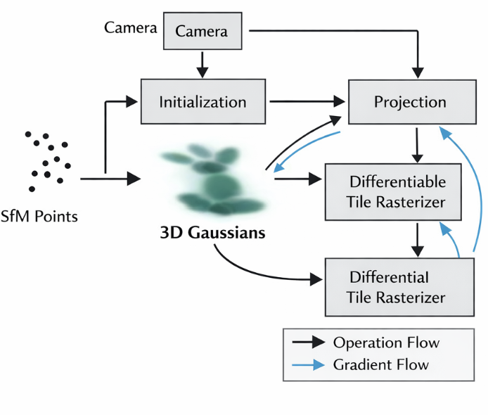
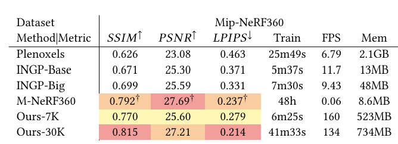
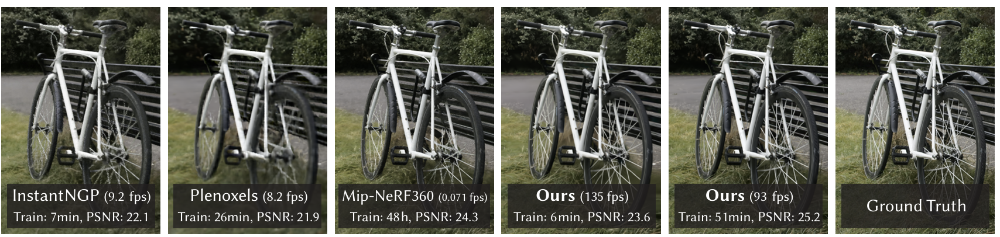

Kerbl, Kopanas, Leimkühler, & Drettakis (SIGGRAPH 2023)
Imagine: A virtual replica of your room, viewable from any angle—like a magic mirror showing views you never photographed.
The Challenge: Creating 3D scenes from photos that are:
✓ Beautiful results
✗ 48 hours to train
✗ 0.071 fps rendering (too slow)
✓ Train in minutes
✓ 8–9 fps rendering
✗ Lower quality
The Gap: No method achieves both high quality and real-time speed (≥30 fps).
The Key Insight: Forget complex neural networks. Represent the scene using thousands of tiny "fuzzy 3D blobs"—like softballs scattered in space.
Why Simpler Works:

3D Gaussian Splatting overall pipeline: initialize Gaussians from SfM points, render through projection and differentiable rasterization, and refine scene structure with adaptive density control.
Smart Adjustment: During training, the system intelligently adds blobs where detail matters and removes unhelpful ones.
The Result:

Quantitative comparison across multiple datasets: Gaussian Splatting achieves a stronger balance between image quality and rendering efficiency than prior methods.
The Breakthrough: A new algorithm renders these blobs SO fast that interaction feels like a video game.
✓ Smooth real-time interaction | ✓ High visual quality

Visual comparison results: Gaussian Splatting preserves scene details while significantly increasing rendering speed.
Broader Lesson: Sometimes simpler representations work better than newer, fancier techniques. Innovation isn't always about complexity.
Research Design Lesson: The authors asked "What actually solves this problem?" rather than "What's the newest technology?" I learned to prioritize solving the problem over following trends.
Writing Lesson: Every claim is backed by numbers: "135 fps," "51 minutes," "56× faster." The paper introduces three key elements in the abstract and returns to them throughout. Clarity comes from structure and evidence.
This paper achieves what many thought was a decade away: real-time, photorealistic rendering of captured scenes. By rethinking scene representation using 3D Gaussians and designing all components to work together, the authors deliver both quality and speed.
Broader Insight: Innovation doesn't always require more complexity. Choosing the right representation—one that fits your problem and computational constraints—often matters more than using the newest techniques.
Thank you. Questions?